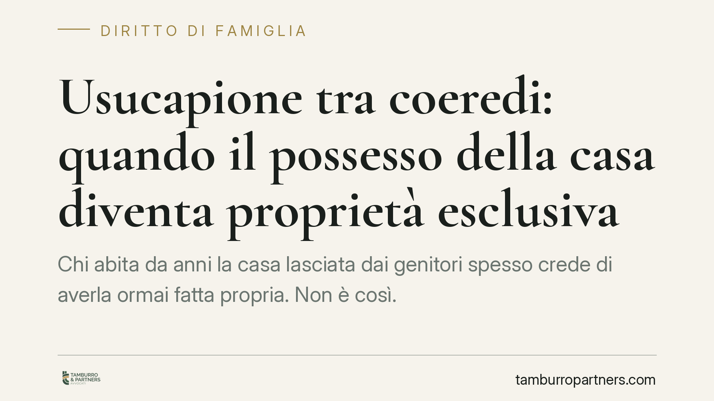

Usucapione tra coeredi: quando il possesso della casa diventa proprietà esclusiva
Chi abita da anni la casa lasciata dai genitori spesso crede di averla ormai fatta propria. Non è così. La Cassazione ribadisce che tra coeredi l'usucapione richiede un possesso esclusivo e in contrasto con i diritti degli altri, non la semplice occupazione tollerata. Una distinzione che può decidere l'esito di una divisione ereditaria.

Il punto: convivenza non è usucapione
Alla morte di un genitore, la casa entra in comunione ereditaria: appartiene a tutti gli eredi pro quota, cioè per frazioni ideali. Uno dei fratelli continua ad abitarci, paga le utenze, cura la manutenzione. Passano vent'anni. Può dire di averla usucapita, escludendo gli altri?
La risposta, nella gran parte dei casi, è no. E il motivo è tecnico ma decisivo.
Inquadramento normativo
L'usucapione è il modo di acquistare la proprietà attraverso il possesso continuato per venti anni (art. 1158 c.c.). Tra coeredi, però, la questione si complica per effetto dell'art. 1102 c.c., che regola l'uso della cosa comune: ciascun partecipante può servirsi del bene, purché non ne alteri la destinazione e non impedisca agli altri di farne pari uso.
Qui sta il nodo. L'erede che abita la casa comune, di per sé, esercita una facoltà che la legge gli riconosce. La sua presenza è compatibile con il diritto degli altri comproprietari. Per usucapire deve accadere qualcosa di più: il godimento deve trasformarsi in possesso esclusivo e contrastante.
L'art. 1164 c.c. lo dice con chiarezza: chi possiede per conto altrui (o insieme ad altri) non può usucapire finché il titolo del suo possesso non muta. Serve la cosiddetta *interversione del possesso*: un atto o un comportamento con cui il coerede manifesta in modo inequivocabile la volontà di possedere per sé, escludendo gli altri.
La giurisprudenza recente è netta. La Cassazione (n. 10487/2025 e n. 5109/2024) conferma che il coerede deve dimostrare di aver goduto del bene *in modo incompatibile* con la possibilità di godimento altrui, con atti idonei a rendere riconoscibile agli altri eredi l'intenzione di tenere la cosa come propria. Anche i giudici di merito si muovono nella stessa direzione (Tribunale di Lamezia Terme n. 413/2025; Corte d'Appello di Bari n. 169/2024).
Cosa serve davvero per usucapire
Non basta abitare la casa, nemmeno per decenni. Non basta pagarne le spese: chi usa un bene comune ne sostiene naturalmente i costi. Non basta il silenzio degli altri eredi, che può essere semplice tolleranza tra parenti.
Occorrono comportamenti concreti che segnalino il passaggio dal godimento condiviso al possesso esclusivo. Alcuni esempi ricorrenti nelle pronunce:
- Impedire fisicamente agli altri coeredi l'accesso o l'uso del bene.
- Effettuare trasformazioni rilevanti dell'immobile senza consultare gli altri, comportandosi da unico proprietario.
- Rifiutare in modo esplicito e documentato le richieste degli altri eredi di utilizzare o dividere la casa.
- Locare l'immobile a terzi trattenendone integralmente i canoni, senza rendiconto agli altri.
Il punto comune è la *conoscibilità*: gli altri coeredi devono essere messi in condizione di percepire che chi occupa non lo fa più come uno dei tanti comproprietari, ma come chi rivendica il tutto per sé. Da quel momento, e solo da quel momento, inizia a decorrere il ventennio.
Implicazioni pratiche
Per chi occupa la casa, la conseguenza è che la sola permanenza prolungata non consolida alcun diritto: alla divisione ereditaria dovrà comunque tenere conto delle quote altrui.
Per gli altri eredi, il messaggio è opposto ma speculare: l'inerzia prolungata di fronte a condotte di appropriazione esclusiva può, nel tempo, cristallizzare una situazione a proprio svantaggio. Tacere per amore di quiete familiare non è sempre la scelta più prudente.
La prova, in giudizio, è quasi sempre l'aspetto più delicato: chi invoca l'usucapione deve dimostrare tanto la durata quanto la natura esclusiva e opponibile del possesso.
Cosa fare in concreto
- Ricostruite la cronologia: individuate il momento esatto in cui il godimento condiviso si sarebbe trasformato in possesso esclusivo. Senza una data certa non c'è ventennio da calcolare.
- Raccogliete prove documentali: atti, comunicazioni, testimonianze che dimostrino l'opposizione agli altri eredi, non la semplice occupazione.
- Se siete coeredi esclusi, formalizzate per iscritto ogni richiesta di uso o divisione: interrompe la maturazione dell'usucapione a vostro carico.
- Non confondete spese e possesso: pagare tasse e manutenzione non prova nulla ai fini dell'usucapione.
- Consigliamo di valutare per tempo un'azione di divisione ereditaria, prima che situazioni di fatto prolungate diventino difficili da rimuovere.
Contributo informativo a cura di Tamburro & Partners - Avv. Giuseppe Tamburro. Non costituisce parere legale.
Ogni famiglia ha il suo equilibrio.
Separazione, divorzio, affidamento, assegno: se vuoi un confronto riservato su una specifica situazione, scrivi allo studio. Ti rispondiamo entro un giorno lavorativo.